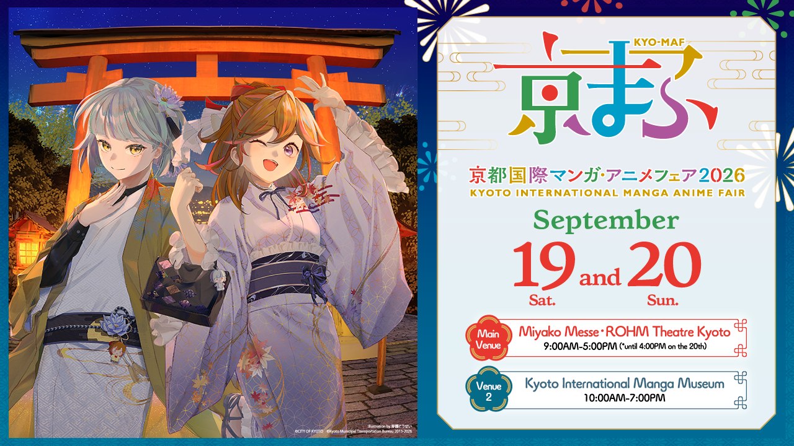

We are taking an important step forward for the animation project we have been working on for a long time. Our team's goal is to elevate our production vision and technical infrastructure to international standards. To that end, we will be visiting the "Kyoto International Manga Anime Fair (KYOMAF)" this September, one of Western Japan's leading anime events, as attendees to explore the industry and build new connections.

Building Bridges Between Cultures
During the fair, we will meet with various studios and producers to deepen the connection between the Japanese anime industry and the Turkish animation scene. Our primary purpose is to learn firsthand about Japan's anime production, while also building the necessary connections for Chiseteiru to become part of an international production network.
As a studio from Turkiye, we believe that our storytelling approach can be combined with the craftsmanship of Japanese animation. We see this visit as the first concrete step toward achieving that goal.
We aim for the connections we build here to develop into long-term partnerships in the future.